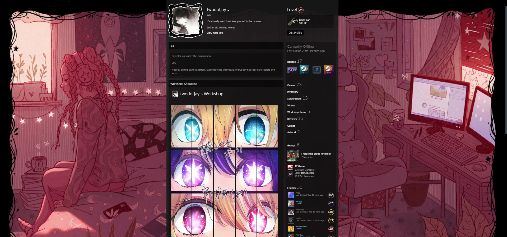

Steam
My Steam Profile
Main Instagram

My Personal instagram
Second Instagram

My Expressive Instagram, where I test my photographer skills and just express my thoughts.
My Steam Profile
My Personal instagram
My Expressive Instagram, where I test my photographer skills and just express my thoughts.